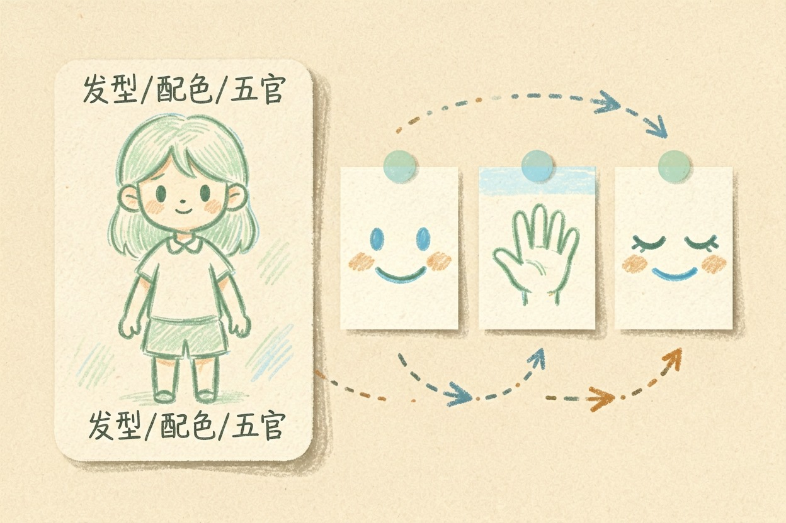
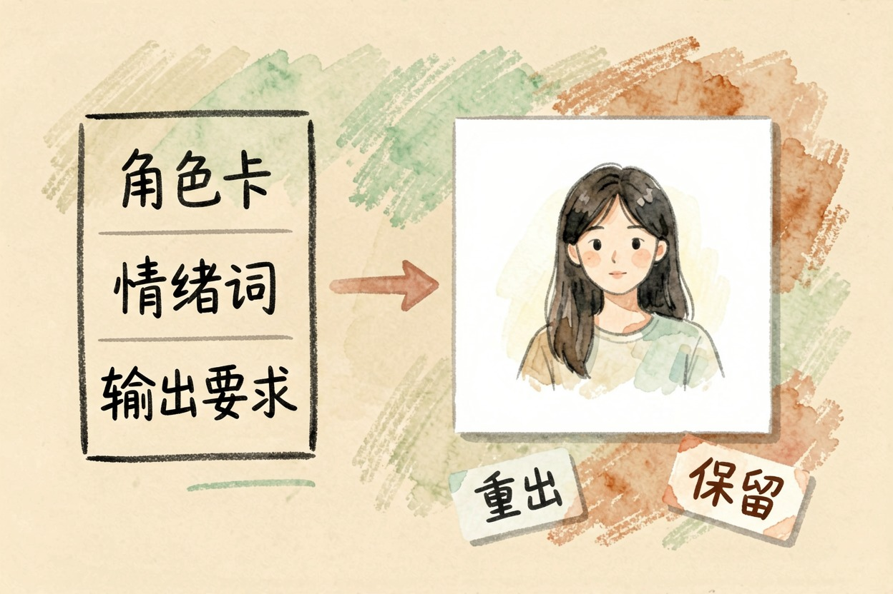
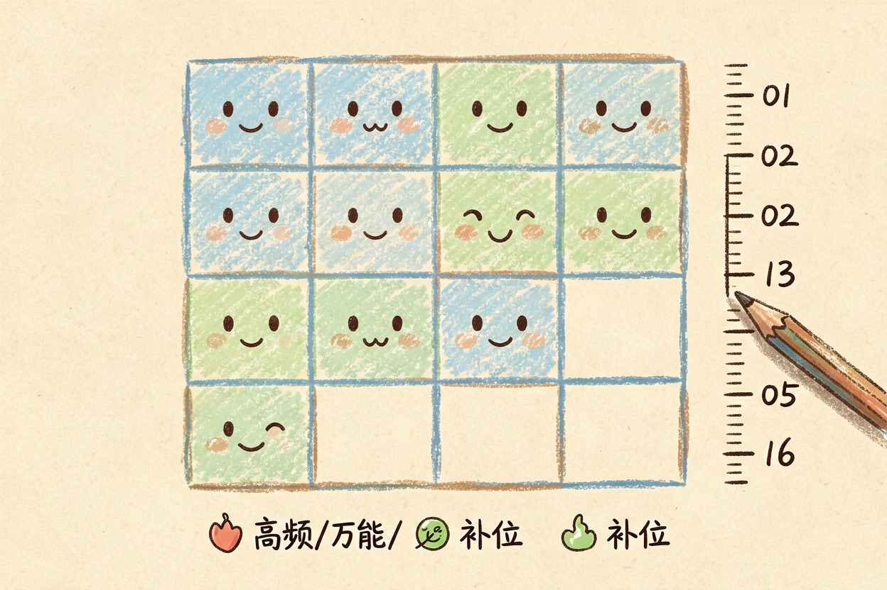
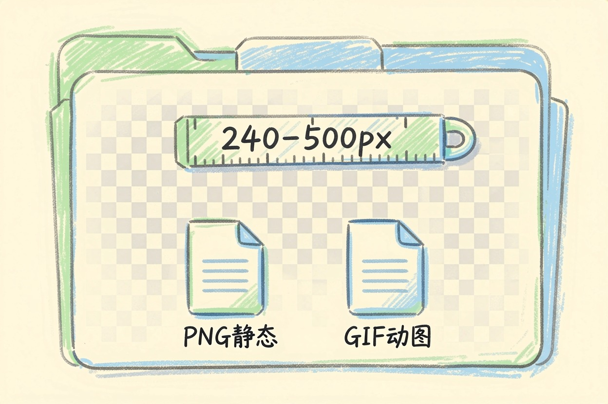
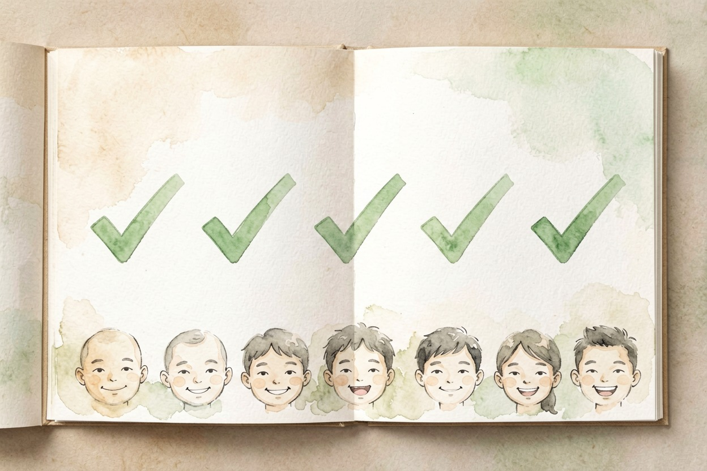

用 AI 做表情包？做一套自己的聊天表情 — Learntide
想做一套专属表情，先用三五行把角色长相和常用情绪定死，再交给模型。
ai做表情包：先把角色和情绪定下来

ai做表情包最容易翻车的地方，是每张脸长得不一样。今天圆脸明天方脸，发出去朋友认不出是同一套。
动手前先写一张角色卡。定好发型、配色、五官比例，最好附一张参考图。之后每条文都带上这张卡，画风才能锁住。
情绪清单也要先列。日常聊天无非那十来种：开心、无语、拒绝、加油、晚安。按清单出图，比随想随做更完整。
角色卡别写太长。三五行说清长相和穿搭就够了，写成长篇小说模型反而抓不住重点。
参考图优先用自己画的稿。网上风格图版权说不清，拿草图当锚，模型学得更准，也少踩雷。
给模型一段能用的提示词

三件事写清楚，提示词就简单了。把卡贴前面，后面只换情绪词。
你是表情包画师。请基于以下角色生成一张表情。
角色卡：圆脸、短发、穿黄色卫衣的小猫，线条简洁，平涂风格
表情：无语，眼睛半眯，嘴角下撇
要求：白底、主体居中、留边、表情夸张易辨认
输出：可直接生图的提示词一段拿到图先看脸对不对。脸歪了就重出，别在废图上修，越修越怪。
同一情绪多跑几张。模型每次随机，挑最传神的那张留，剩下的删掉，成品率会高很多。
背景统一更成系列。整套用同色底，缩成小图也连得起，发出去一眼就像一家人。
表情别加边框。平台会自动加白边，你再描一圈就显脏，留干净主体最耐看。
角色卡也能迭代。第一张不满意，就把问题写回卡里，比如「眼睛再大一点」，下张就准。
规划一套完整的表情套系

零散做几张不难，难的是成套。建议先凑满十六张再上线，覆盖高频场景。
套系要有节奏。别全是哭脸，也别全是加油。喜怒哀乐各几张，聊天时才接得住话。
留两三张万能款。比如摊手、比心、谢谢，这些不分场合都能发，使用率最高。
编号从 01 连到 16。中间别跳号，后台看着整齐，以后想补哪张直接插进去。
封面图别和表情混。它们是两套素材，分开文件夹存，找的时候不串。
导出透明背景与尺寸规范

聊天表情大多要透明底。生图时勾掉背景，或导出后抠掉，否则贴到对话框会带方块。
尺寸按平台来。微信表情建议 240 到 500 像素见方，太小发出来糊，太大加载慢。
文件别都存一张图。每张单独导出，命名按序号，后期替换某一张不牵动整套。
动图另走一套。想做眨眼就导 gif，静态那套尺寸规则对动图不通用，分开管。
导出前放大看。缩略图里的小瑕疵看不出，满屏看一眼才现形，省得返工。
文件格式也看清。静态用 png，动图用 gif，别用 bmp 那种老格式，平台多半不吃。
别让模型替你决定用哪张。也别一次做一张就急着发，先攒够一套再统一看效果。工具从工具导航里挑一个顺手的就行，ai做表情包真正好玩的，是把自己的梗变成天天能发的表情。

本文信息核对于 2026-08-08。AI 产品的价格、免费额度与功能变动频繁，实际以各工具官网当前说明为准。